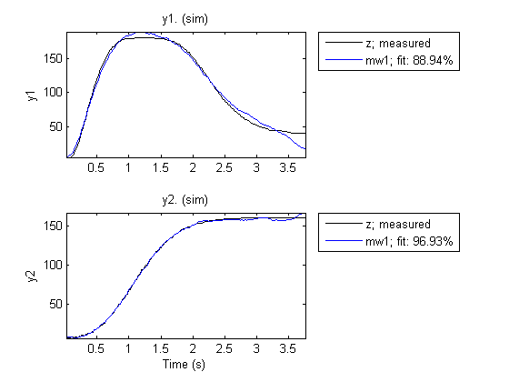
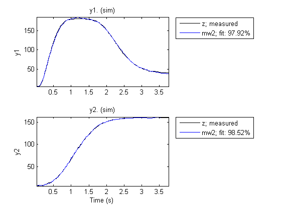
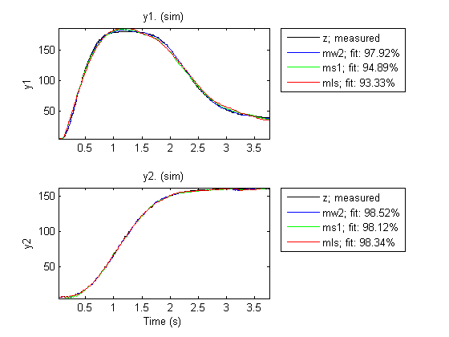
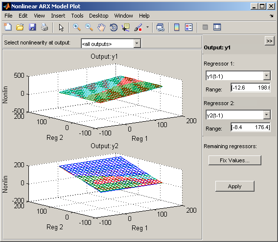
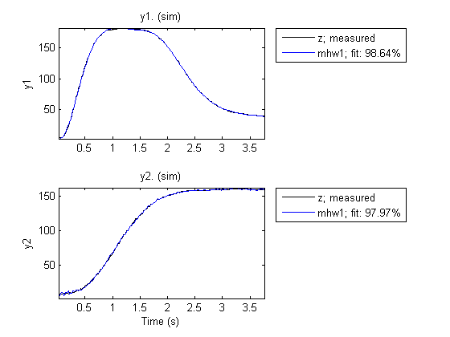
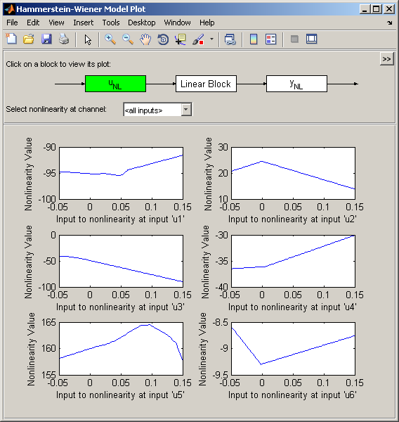
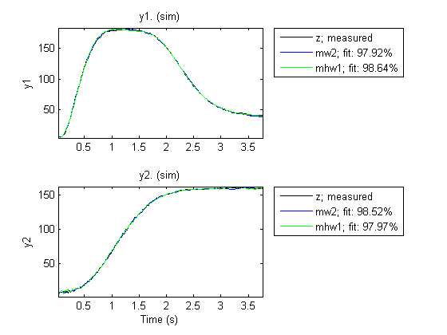

A Motorized Camera - Multi-Input Multi-Output Nonlinear ARX and Hammerstein-Wiener Models
In this demo we illustrate the basic commands of System Identification Toolbox™ for the estimation of multi-input-multi-output (MIMO) nonlinear black box models from data. Two types of nonlinear black box models are offered in the toolbox - Nonlinear ARX and Hammerstein-Wiener models.
Contents
- The Data Set Used in This Demo
- Nonlinear ARX (IDNLARX) Model - Preliminary Estimation Using Wavenet
- Nonlinear ARX Model - Trying Higher Orders
- Nonlinear ARX Model - Adjusting Number of Units of Nonlinearity Estimators
- Nonlinear ARX Model - Trying Other Nonlinearity Estimators
- Nonlinear ARX Model with Mixed Nonlinearity Estimators
- Inspection of Estimation Results
- Hammerstein-Wiener (IDNLHW) Model - Preliminary Estimation
- Estimation of Hammerstein Model (No Output Nonlinearity)
- Estimation of Wiener Model (No Input Nonlinearity)
- Estimation of Hammerstein-Wiener Model (Both Input and Output Nonlinearities)
- Hammerstein-Wiener Model - Using Mixed Nonlinearity Estimators
- Hammerstein-Wiener Model - Specifying Initial Guess for SATURATION and DEADZONE Estimators
- Post Estimation Analysis - Comparing Different Models
- Additional Information
The Data Set Used in This Demo
Throughout this demo, examples will be made with the data saved in the file motorizedcamera.mat. It contains 188 data samples, collected from a motorized camera with a sampling interval of 0.02 seconds. The input vector u(t) is composed of 6 variables: the 3 translation velocity components in the orthogonal X-Y-Z coordinate system fixed to the camera [m/s], and the 3 rotation velocity components around the X-Y-Z axes [rad/s]. The output vector y(t) contains 2 variables: the position (in pixels) of a point which is the image taken by the camera of a fixed point in the 3D space. We create an IDDATA object z to hold the loaded data:
load motorizedcamera z = iddata(y, u, 0.02, 'Name', 'Motorized Camera', 'TimeUnit', 's');
Nonlinear ARX (IDNLARX) Model - Preliminary Estimation Using Wavenet
Let us first try nonlinear ARX models. Two important elements need to be chosen: the model orders and the nonlinearity estimators. To try simple things first, let us choose the orders [na nb nk] = [ones(2,2), ones(2,6), ones(2,6)]. It means that each output variable is predicted by all the output and input variables, each being delayed by 1 sample. By using vector notations, the model can be written in the form of model_output(t) = F(y(t-1), u(t-1)). Let us choose Wavelet Network (wavenet) as nonlinearity estimator, thus the vectorial nonlinear function F will be estimated by two wavelet networks. The function nlarx facilitates estimation of Nonlinear ARX models.
mw1 = nlarx(z, [ones(2,2), ones(2,6), ones(2,6)], wavenet);
Examine the result by comparing the output simulated with the estimated model and the output in the measured data z:
compare(z,mw1)
Nonlinear ARX Model - Trying Higher Orders
Let us see if we can do better with higher orders.
mw2 = nlarx(z, [ones(2,2), 2*ones(2,6), ones(2,6)], wavenet); compare(z,mw2)
The second model mw2 is pretty good. So let us keep this choice of model orders in the following examples.
nanbnk = [ones(2,2), 2*ones(2,6), ones(2,6)];
The numbers of units (wavelets) of the two WAVENET estimators have been automatically chosen by the estimation algorithm. These numbers are displayed below. Notice the abbreviations 'nl'='Nonlinearity' and 'num'='NumberOfUnits'.
mw2.Nonlinearity(1).NumberOfUnits %using full property names mw2.nl(2).num %using short-hand notations
ans =
27
ans =
25
Nonlinear ARX Model - Adjusting Number of Units of Nonlinearity Estimators
The number of units in the WAVENET estimators can be explicitly specified instead of being automatically chosen by the estimation algorithm:
mw3 = nlarx(z, nanbnk, [wavenet('num',10); wavenet('num',5)]);
Nonlinear ARX Model - Trying Other Nonlinearity Estimators
At the place of the WAVENET estimator, other nonlinearity estimators can also be used. Let us try the TREEPARTITION estimator. Notice the abbreviated name string.
mt1 = nlarx(z, nanbnk, 'tree'); % tree is short for treepartition
In the above call, we have used a string ('tree') in place of an object to specify the nonlinearity estimator. The benefit of using the string form is that incomplete, case-insensitive specification can be done. However, this works only if the nonlinearity is to be used with default property values. In the following example, the treepartition object constructor is called to directly create a nonlinearity estimator object.
mt2 = nlarx(z, nanbnk, treepartition);
The SIGMOIDNET estimator can also be used. Notice that algorithm options such as maximum iterations (MaxIter) and iteration display can be directly indicated in the NLARX command.
ms1 = nlarx(z, nanbnk, 'sigmoidnet', 'maxiter',2, 'display', 'on');
Criterion: Determinant minimization
Scheme: Nonlinear least squares with automatically chosen line search method
------------------------------------------------------------------------------------------
Norm of First-order Improvement (%)
Iteration Cost step optimality Expected Achieved Bisections
------------------------------------------------------------------------------------------
0 1.04083e+007 - 2.78 200 - -
1 0.191465 82.1 19.4 200 100 0
2 0.190233 1.82 20.9 196 0.644 8
------------------------------------------------------------------------------------------
Nonlinear ARX Model with Mixed Nonlinearity Estimators
It is possible to use different nonlinearity estimators on different output channels in the same model. Suppose we want to use a tree partition nonlinearity estimator for prediction of first output and use a wavelet network for prediction of the second output. The model estimation is shown below. The third input argument (nonlinearity) is now an array of two different nonlinearity estimator objects.
mtw = nlarx(z, nanbnk, [treepartition; wavenet]);
The absence of nonlinearity in an output channel can be indicated by choosing a LINEAR estimator. The following example means that, in model_output(t) = F(y(t-1), u(t-1), u(t-2)), the function F is composed of a linear component and a nonlinear component (SIGMOIDNET).
mls = nlarx(z, nanbnk, [linear; sigmoidnet('num',5)], 'maxi',2); % no nonlinearity on first output
Inspection of Estimation Results
Various models can be compared in the same COMPARE command.
compare(z, mw2, ms1, mls)
Function PLOT may be used to view the nonlinearity responses of various models.
plot(mt1,mtw,ms1,mls)
Note that the control panel on the right hand side of the plot allows for regressor selection and configuration.
Other functions such as RESID, PREDICT and PE may be used on the estimated models in the same way as in the case of linear models.
Hammerstein-Wiener (IDNLHW) Model - Preliminary Estimation
A Hammerstein-Wiener model is composed of up to 3 blocks: a linear transfer function block is preceded by a nonlinear static block and/or followed by another nonlinear static block. It is called a Wiener model if the first nonlinear static block is absent, and a Hammerstein model if the second nonlinear static block is absent.
IDNLHW models are typically estimated using the syntax:
M = NLHW(Data, Orders, InputNonlinearity, OutputNonlinearity).
where Orders = [nb bf nk] specifies the orders and delay of the linear transfer function. InputNonlinearity and OutputNonlinearity specify the nonlinearity estimators for the two nonlinear blocks. The linear output error (OE) model corresponds to the case of trivial identity (UNITGAIN) nonlinearities.
Estimation of Hammerstein Model (No Output Nonlinearity)
Let us choose Orders = [nb bf nk] = [ones(2,6), ones(2,6), ones(2,6)]. It means that, in the linear block, each output is the sum of 6 first order transfer functions driven by the 6 inputs. Try a Hammerstein model (no output nonlinearity) with the piecewise linear estimator. Notice that the entered single PWLINEAR object is automatically expanded to all the 6 input channels. UNITGAIN indicates absence of nonlinearity.
mhw1 = nlhw(z,[ones(2,6), ones(2,6), ones(2,6)], pwlinear, unitgain, 'maxiter',2);
Examine the result with COMPARE.
compare(z, mhw1);
Model properties can be visualized by the PLOT command.
Click on the block-diagram to choose the view of the input nonlinearity (UNL), the linear block or the output nonlinearity (YNL).
When the linear block view is chosen, by default all the 12 channels are shown in very reduced sizes. Choose one of the channels to have a better view. It is possible to choose the type of plots within Step response, Bode plot, Impulse response and Pole-zero map.
plot(mhw1)
The result shown by COMPARE was quite good, so let us keep the same model orders in the following trials.
nbnfnk = [ones(2,6), ones(2,6), ones(2,6)];
Estimation of Wiener Model (No Input Nonlinearity)
Let us try a Wiener model. Notice that the absence of input nonlinearity can be indicated by "[]" instead of the UNITGAIN object. The abbreviation 'pwl' for 'pwlinear' can be used.
mhw2 = nlhw(z, nbnfnk, [], 'pwl', 'maxiter',4);
Estimation of Hammerstein-Wiener Model (Both Input and Output Nonlinearities)
Indicate both input and output nonlinearities for a Hammerstein-Wiener model. As in the case of Nonlinear ARX models, we can use a string (rather than object) to specify the nonlinearity estimator. In the following example, 'sat' is used as short name for 'saturation'.
mhw3 = nlhw(z, nbnfnk,'sat', 'pwl', 'maxiter',4);
The limit values of the SATURATION estimators can be accessed. The short-hands 'u'='input', 'y'='output', and 'nl'='Nonlinearity' are available.
mhw3.InputNonlinearity(1).LinearInterval % view Linear Interval of SATURATION mhw3.unl(3).LinearInterval % access using using short-hand notation
ans =
0.0103 0.0562
ans =
-0.0943 -0.0176
The break points of the PWLINEAR estimator can also be accessed.
mhw3.outputNL(1).BreakPoints
ans =
Columns 1 through 7
16.8870 33.7740 50.6609 67.5479 84.4349 101.3219 118.2089
2.6469 16.0902 45.5445 41.9864 62.3487 84.9285 112.3221
Columns 8 through 10
135.0958 151.9828 168.8698
135.4823 156.1339 173.3085
Hammerstein-Wiener Model - Using Mixed Nonlinearity Estimators
Different nonlinearity estimators can be mixed in a same model. Suppose we want a model with: - No nonlinearity on any output channels ("Hammerstein Model") - Piecewise linear nonlinearity on input channel #1 with 3 units - Saturation nonlinearity on input channel #2 - Dead Zone nonlinearity on input channel #3 - Sigmoid Network nonlinearity on input channel #4 - No nonlinearity (specified by a unitgain object) on input channel #5 - Sigmoid Network nonlinearity on input channel #6 with 5 units
We can create an array of nonlinearity object estimators of chosen types and pass it to the estimation function NLHW as input nonlinearity.
inputNL = [pwlinear('num',3); saturation; deadzone; sigmoidnet; unitgain; sigmoidnet('num',5)]; mhw4 = nlhw(z, nbnfnk, inputNL, [], 'maxiter',2); % "[]" for 4th input denotes no output nonlinearity
Hammerstein-Wiener Model - Specifying Initial Guess for SATURATION and DEADZONE Estimators
The initial guess for the linear interval of SATURATION and the zero interval of DEADZONE can be directly indicated when the estimator objects are created. Suppose we want to set the saturation's linear interval to [10 200] and the deadzone's zero interval to [11 12] as initial guesses.
mhw5 = idnlhw(nbnfnk, [], [saturation([10 200]); deadzone([11 12])]); % Create nonlinearity estimator with initial guesses for properties. % Notice the use of the IDNLHW model object constructor idnlhw, not the % estimator nlhw. The resulting model object mhw5 is not yet estimated from % data.
The limit values of the saturation and deadzone estimators can be accessed. They still have their initial values, because they are not yet estimated from data.
mhw5.outputNL(1).LinearInterval % show linear interval on saturation at first output channel after estimation mhw5.yNL(2).ZeroInterval % show zero interval on dead zone at second output channel after estimation
ans =
10 200
ans =
11 12
What are the values of these limits after estimation?
mhw5 = nlhw(z, mhw5, 'MaxIter',5); % estimate the model from data mhw5.outputNL(1).LinearInterval % show linear interval on saturation at first output channel after estimation mhw5.yNL(2).ZeroInterval % show zero interval on dead zone at second output channel after estimation
ans = 10.0000 200.0000 ans = 11.0000 12.0000
Post Estimation Analysis - Comparing Different Models
Models of different nature (IDNLARX and IDNLHW) can be compared in the same COMPARE command.
compare(z,mw2,mhw1)
Additional Information
For more information on identification of dynamic systems with System Identification Toolbox visit the System Identification Toolbox product information page.